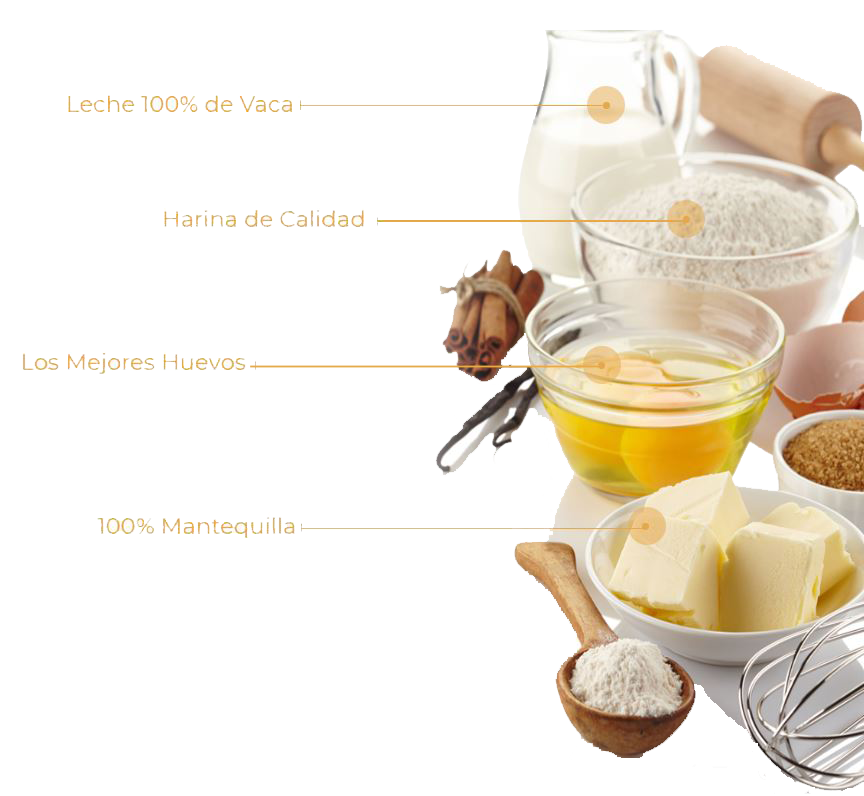

Dia de las madres.
La celebración del día de la madres se remota a la antigua Grecia, cuando se le rendían honores a Rhea, la madre de los dioses Júpiter, Neptuno y Plutón. Los romanos llamaban a esta celebración La Hilaria, se llevaba a cabo el 15 de marzo en el templo de Cybele y durante tres días se hacían ofrecimientos.
Posteriormente los primeros cristianos celebraban el día de las madres en honor a la virgen María, madre de Jesús.
En Estados Unidos, la celebración tiene sus orígenes hacia 1872, cuando Julia Ward Howe, autora del Himno de batalla de la República, sugirió que esa fecha fuera dedicada a honrar la paz, y comenzó celebrando cada año encuentros en las ciudades de Boston y Massachusetts en celebración del Día de la Madre.
El día de las madres en México tiene origen desde hace más de 80 años, cuando un periodista llamado Rafael Alducin que trabajaba para el periódico " Excélsior" hizo una invitación un 13 de Abril de 1922 a toda le gente, para que propusieran un día de festejo a las madres. Es así como el 10 de mayo de 1922, por primera vez en México se celebra a la madres.
Nuestros principales productos autenticos y de alta calidad que Panadería "Le Madame Carrot" te trae para tí,
a través de ingredientes cuidadosamente seleccionados mantenemos el compromiso de deleitar a nuestros clientes.
